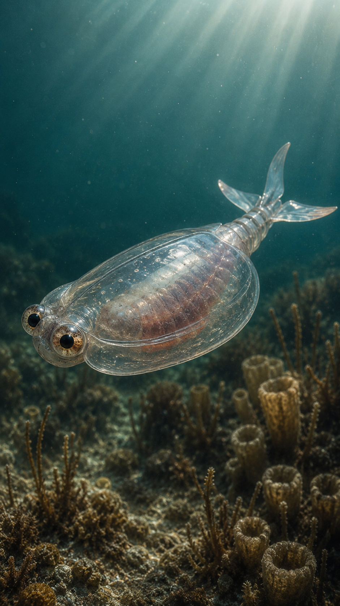
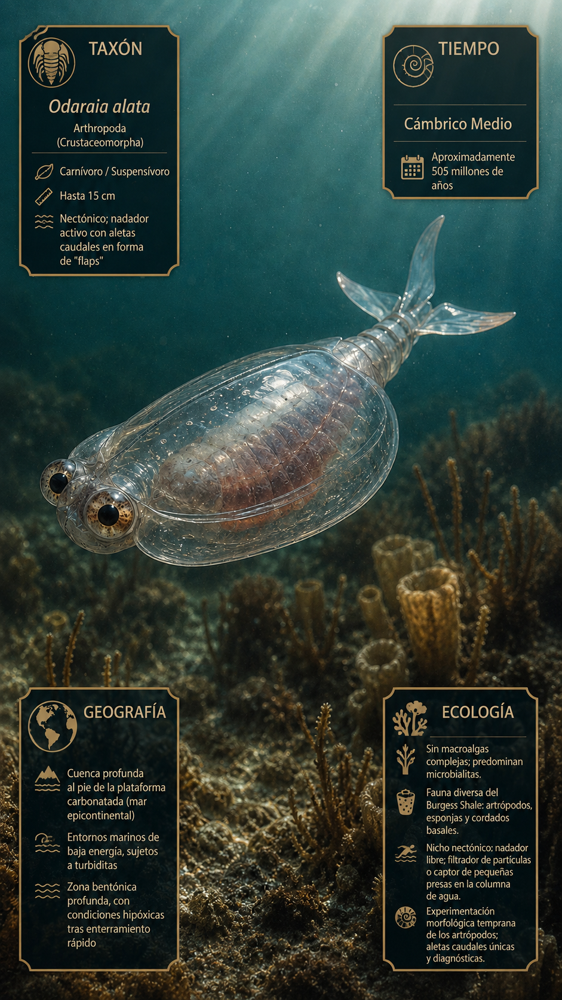
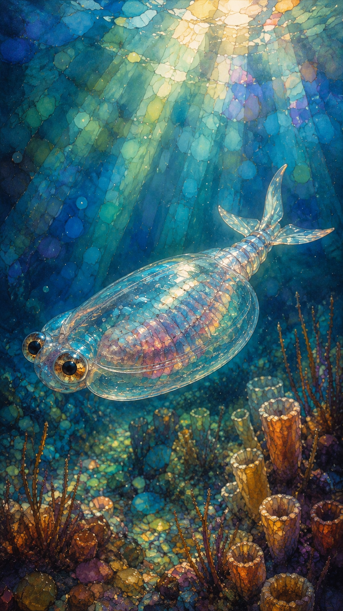
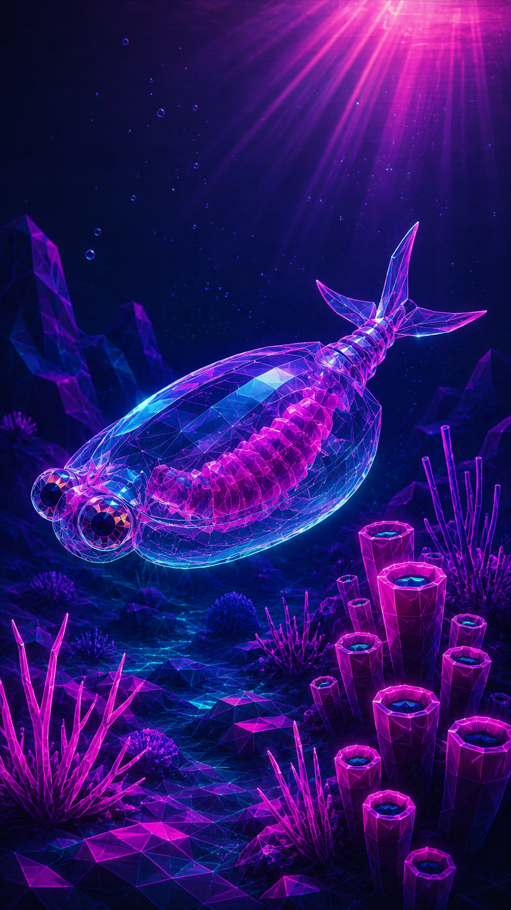

Paleoficha de PalEntropía




TAXÓN:
Odaraia alata
CLADO:
Arthropoda (Crustaceomorpha)
DIETA:
Carnívoro / Suspensívoro (probablemente filtrador activo de pequeñas presas y partículas).
TAMAÑO:
Hasta 15 cm de longitud.
LOCOMOCIÓN:
Nectónica; natación activa mediante aletas caudales y un cuerpo hidrodinámico protegido por un caparazón tubular.
TIEMPO:
Cámbrico Medio, aproximadamente hace 505 millones de años.
GEOGRAFÍA:
Cuenca profunda del Burgess Shale (Canadá).
EQUIVALENCIA PALEOGEOGRÁFICA:
Ambientes marinos profundos al pie de plataformas carbonatadas, afectados por corrientes de turbidez.
AMBIENTE PALEAOECOLÓGICO:
Fondos marinos de baja energía con enterramientos rápidos y episodios de baja oxigenación.
ECOLOGÍA:
• Flora: Predominio de microbialitas y fitoplancton; ausencia de macroalgas complejas en la zona de enterramiento.
• Fauna secundaria: Artrópodos del Burgess Shale, esponjas, gusanos, cordados basales y otros organismos de cuerpo blando.
• Nichos: Nadador pelágico. Su caparazón cilíndrico y sus aletas caudales indican un estilo de vida activo en la columna de agua, donde filtraba partículas o capturaba pequeñas presas.
• Relaciones: Representa una de las formas más especializadas de los artrópodos cámbricos, mostrando una temprana adaptación a nichos pelágicos durante la Explosión Cámbrica.
CLIMA:
Wm18 (Cámbrico cálido). Océanos globalmente cálidos con niveles variables de oxígeno y elevada diversidad marina.
ESTADO ECOLÓGICO:
Estable. Odaraia demuestra la rápida diversificación de los artrópodos hacia modos de vida nectónicos poco después de la Explosión Cámbrica, ocupando un nicho que posteriormente sería explotado por numerosos grupos de crustáceos.